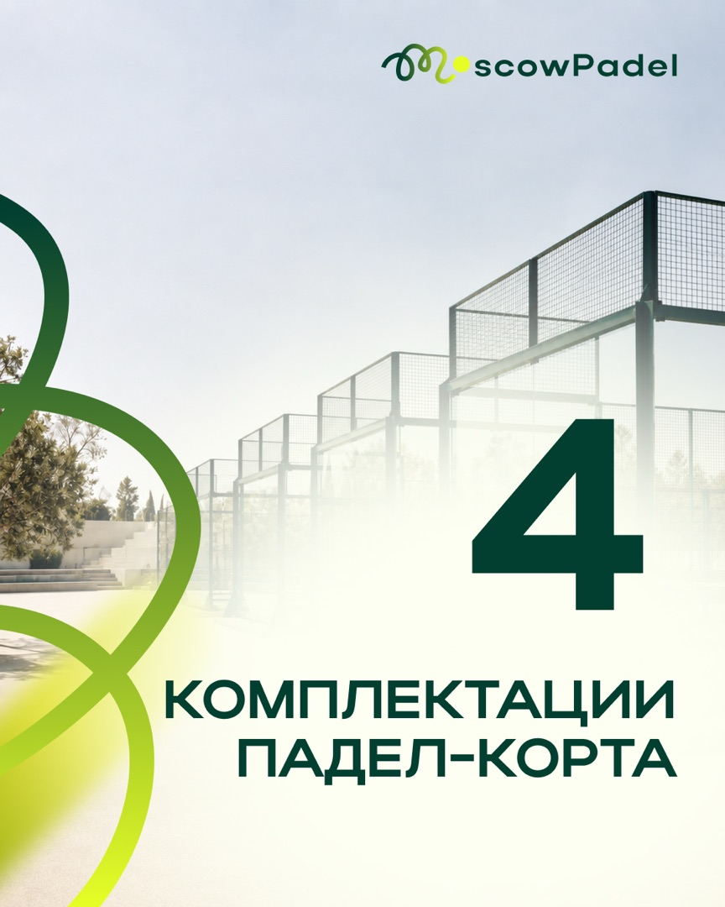

Строительство падел-кортов · контент для длинной сделки · август 2026
Как объяснить дорогой падел-корт в 20 публикациях
Для MoscowPadel собрали месяц контента: объяснили устройство и стоимость корта, разобрали сомнения, показали объекты и упаковали всё в 87 финальных визуалов.
Контент‑план и визуал утверждены. 20 черновиков загружены в календарь ВКонтакте и Instagram.



Маркетинговая задача
Продажа начинается не с акции, а с понимания
Падел-корт — сложная и дорогая покупка. Решение принимают не за один просмотр поста: сначала изучают конструкцию, варианты, риски и подрядчика.
Что мешает решению
Продукт выглядит проще, чем устроен на самом деле
Из чего состоит корт?
Почему цены отличаются?
Где нельзя экономить?
Подойдёт ли площадка?
Что будет после монтажа?
Что должен сделать контент
Превратить технические детали в последовательный маршрут доверия
Мы не строили месяц как поток прямых продаж. Сначала дали человеку язык для выбора, затем показали объекты и варианты, после этого добавили спокойные предложения написать и обсудить площадку.
Логика месяца
Один вопрос ведёт к следующему
Каждая группа публикаций выполняет свою роль. Вместе они готовят человека к осмысленному разговору с компанией.
Знакомый контекст
Рост интереса к паделу, сезон и сравнение с теннисом дают простой вход в тему.
Устройство продукта
Конструкция, стоимость, комплектации и подготовка площадки становятся понятнее.
Мифы и ошибки
Контент показывает, почему корт нельзя свести к площадке с сеткой и где опасна экономия.
Объекты и сценарии
Частный корт, академия и бизнес-проект переводят продукт из абстракции в примеры.
Спокойный следующий шаг
Расчёт, комплектация и обращение в сообщения появляются после полезной части.
Полезных и экспертных
Объясняют продукт и подготовку.
Объектных материала
Показывают разные сценарии.
Предложения
Ведут к расчёту и диалогу.
Разбора мифов
Разделяют решение и имитацию.
Вовлекающих
Помогают аудитории включиться.
Ситуативных
Связывают продукт с моментом.
Продукт целиком
Не три красивых обложки — весь готовый комплект
Здесь можно открыть все 20 тем, посмотреть ленту, пролистать 77 слайдов каруселей и проверить календарь черновиков.
Утверждённая последовательность
20 тем: от устройства корта до следующего шага
Номера показывают порядок в комплекте, даты — слоты черновиков с 6 по 25 августа. Форматы и рубрики видны сразу.
Полная лента
20 обложек в единой системе 4:5
Нажмите на макет, чтобы открыть его без обрезки. У каруселей здесь показана обложка; все семь слайдов находятся в следующей вкладке.
10 основных каруселей · 70 слайдов
Сложные темы раскрыты по шагам
Листайте стрелками или выбирайте миниатюры. Любой большой слайд можно открыть отдельно — изображение показано целиком.
Дополнительный формат · 7 слайдов
«Падел: 7 фактов, после которых хочется попробовать»
Подарочная карусель не повторяет продающие материалы. Она даёт лёгкий вход в тему и помогает расширить месяц вовлекающим образовательным форматом.
6–25 августа 2026 · ежедневно в 10:00
20 черновиков уже разложены по календарю
20 черновиков размещены во ВКонтакте и Instagram; Telegram и MAX оставались в контент‑плане.
20 черновиков в календаре VK и Instagram.
Telegram и MAX предусмотрены планом проекта.
Финальная версия
Правки внесены до загрузки
Две локальные текстовые неточности исправили до передачи и загрузки материалов.
Итоговая версия
Правки попали в финал
Исправленные файлы заменили до передачи и загрузки. На странице показаны только итоговые версии.
Статус: визуал принят клиентом.
Готовый комплект
87 файлов без точных дублей
Все 87 изображений подготовлены в едином формате 4:5.
Состав: 10 статичных постов + 77 слайдов.
Как собран результат
Не один универсальный исполнитель, а последовательный процесс
Маркетинговая логика, тексты, дизайн, проверка и календарь связаны между собой. Поэтому комплект выглядит цельным и остаётся управляемым.
Разобрали продукт
Учли длинный цикл решения и вопросы покупателя.
Собрали план
Распределили 20 тем по шести задачам контента.
Подготовили тексты
Для каждого поста и каждого слайда задали свою роль.
Сделали дизайн
Собрали 87 макетов в фирменной системе MoscowPadel.
Проверили и загрузили
Внесли локальные правки и собрали календарь черновиков.
Результат проекта
Готовый результат проекта
Здесь видны объём работы, логика, финальные материалы, согласование и календарь проекта.
Что сделали
- контент-план и 20 публикаций утверждены;
- 10 статичных постов и 11 каруселей по 7 слайдов;
- 87 финальных изображений формата 4:5;
- две локальные неточности исправлены до финала;
- 20 черновиков загружены для VK и Instagram;
- календарь собран на 6–25 августа в 10:00.
Итог проекта
Кейс показывает готовый комплект и календарь ВКонтакте и Instagram. Коммерческие показатели не измерялись; Telegram и MAX оставались в плане.
Характеристики кортов, стоимость и расчёты внутри макетов относятся к материалам клиента. Это не независимые гарантии lemonmedia.
У вас продукт, который трудно объяснить одним постом?
Соберём понятный месяц контента вокруг решения клиента
Маркетолог выстраивает логику, команда готовит тексты и дизайн, проверяет комплект и загружает готовые материалы в календарь.